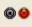

Vous allez commencer par préparer la séance de familiarisation. L’étude préliminéaire est à réaliser par écrit au début du compte-rendu que vous rendrez à la fin des séances de TPs.
1. (Travail) Matériel en électrocinétique¶
1.1. Position du problème.¶
On va se concentrer dans cette partie sur l’étude d’un dipôle en régime statique - on cherchera à tracer sa caractéristique statique - puis en régime dynamique - en traçant \((u(t); i(t))\). On pourra ainsi voir si son comportement est le même en régime indépendant du temps et en régime variable avant de l’utiliser dans des montages. Cette étude va amener à se poser plusieurs questions :
Quel instrument utiliser pour étudier un point de fonctionnement d’un dipôle en régime statique ? Comment le régler et l’utiliser ?
Quel instrument utiliser pour suivre l’évolution d’un point de fonctionnement d’un dipôle en régime dynamique ? Comment le régler et l’utiliser ?
Comment créer un signal de tension fixe pour étudier le régime statique d’un dipôle ?
Comment créer un signal de tension variable pour étudier le régime dynamique ? Comment régler la forme et les caractéristiques voulues pour le signal.
Quelles sont les contraintes liées à une acquisition numérique d’un signal ?
1.2. Instrumentation électrique¶
1.2.1. Instrumentation diverse¶
Sans être exhaustif, citons :
les câbles simples qui matérialisent un fil de connection.
les cables BNC qui contiennent deux câbles. A leur extrémité, soit les deux câbles sont séparés en deux branchements simples, soit un reste sur une connectique BNC et un branchement permet le raccordement des deux bornes du dipôles. C’est le cas des GBF et oscilloscope. En général, un des bornes est alors reliées à la Terre.
les plaquettes de montage. Certaines inclus un ALI ou un multiplieur
les composants R, L, C, Diode de valeur fixe.
les composants R, L, C, Diode de valeur réglable. On parle de boite à décades.
Attention
Les boites à décade ne peuvent être utilisées que comme un seul composant. Vous ne pouvez utiliser la même boite pour créer deux composants.
1.2.2. Les câbles BNC¶
1.2.3. Créer un signal électrique.¶
On distingue trois types de sources :
Les alimentations stabilisées. Elles permettent de créer une tension continue et délivrer une puissance assez importante. On les utilisera peu et le cas échéant, leur fonctionnement sera précisé.
{margin} On remarquera que le constructeur nous impose alors le choix du point de masseLes alimentations symétriques. Elles sont constituées de trois branchements correspondant à des potentiels : \(-15V, 0V, 15V\). On les utilise surtout pour alimenter les ALI (les 3 bornes sont alors à brancher).
Les générateurs basse fréquence. Ils permettent de générer des signaux de forment varier (possiblement continu mais aussi sinusoïdaux, créneaux ou plus complexe). Ils seront très utilisés et on va s’attarder sur leurs réglages.
1.2.3.1. Le GBF : Etapes de réglage¶
Attention
Avant de commencer à toucher aux boutons du GBF, il est obligatoire de réfléchir aux caractéristiques du signal qu’on veut déliver…
La présentation du premier GBF utilisé et le protocole de réglage est présenté ici. Attention, le protocole est général mais les boutons sont spécifiques au GBF présenté.
1.2.4. Mesurer une valeur unique : le multimètre¶
Un multimètre renvoie une valeur correspondant au type de mesure qu’on veut réaliser :
ampèremètre : pour mesurer un courant
voltmètre : pour mesurer une tension
ohmètre : pour mesurer une résistance
1.2.4.1. Ampèremètre et voltmètre¶
On rappelle :
qu’un ampèremètre doit être branché en série avec le dipôle dont on veut mesurer l’intensité qui le traverse.
qu’un voltmètre doit être branché en parallèle du dipôle dont on veut mesurer la tension à ses bornes.
que dans les deux cas, la mesure est polarisée. La bornes
COMcorrespond à la borne-des représentations : la queue de la flèche de tension (voltmètre) ou la sortie du dipôle en terme d’intensité (ampèremètre).que l’autre branchement est en général différent pour l’ampèremètre et le voltmètre.
1.2.4.2. Calibre AC et DC¶
Important
Le calibre DC permet de mesurer la valeur moyenne d’un signal.
Le calibre AC permet de mesurer la valeur efficace d’un signal.
Ces calibres sont parfois représentés pas un ~ (AC) ou un = (DC, le trait inférieur peut-être en pointillés).
Exercice: quel calibre ?
On veut étudier le point de fonctionnement de la diode en régime indépendant du temps.
Pour une tension continue de valeur \(U_0\). Que vaut sa valeur moyenne ?
Pour une tension continue de valeur \(U_0\). Que vaut sa valeur efficace ?
Vaut-il mieux régler le multimètre en DC ou en AC ?
On veut étudier le gain entrée/sortie d’un système électrique en régime sinusoïdal.
Pour une tension sinusoïdal d’amplitude \(U_m\). Que vaut sa valeur moyenne ?
Pour une tension sinusoïdal d’amplitude \(U_m\). Que vaut sa valeur efficace ?
Vaut-il mieux régler le multimètre sur DC ou AC pour mesurer le rapport des amplitudes de deux tensions sinusoidales ?
1.2.5. Suivre l’évolution d’un signal : la carte d’acquisition¶
Une carte d’acquisition est un dispositif permettant de mesurer des tensions et envoyer des mesures à intervalles régulières à un ordinateur. Une logiciel récupère alors les données et affiche l’allure des signaux. L’interface graphique du logiciel (ici Atelier scientifique) permet de régler les paramètres d’acquisition de la carte pour obtenir les données voulues. L’affichage d’un suivi nécessite en effet un paramétrage adapté :
l’acquisition doit suivre le signal voulu.
l’acquisition doit démarrer au bon moment (crucial si le signal n’est pas périodique).
l’acquisition doit durer un temps suffisant pour observer le phénomène voulu. Elle doit aussi ne pas être trop longue pour ne pas “écraser” l’observation du phénomène par des données inutiles.
les mesures ne doivent pas “saturer”(en général, la carte est réglée pour mesurer des tensions entre 2 valeurs extrêmes)
le nombre de points (d’échantillons) doit être suffisant pour pouvoir suivre les variations du signal.
1.2.5.1. Réglage des cartes d’acquisition¶
Affichez les étapes de réglages grâce à la croix à droite.
On se base sur la carte FOXY utilisée au laboratoire.
Alimenter la carte et la brancher (USB) à l’ordinateur. Une interface se lance automatiquement. Choisir Généraliste.
Réaliser les branchements au circuit.
Choisir
Acquisitiondans les menus. Une fenêtre s’affiche à gauche pour les réglages.Choisir la(les) voie(s) à étudier. Elles sont représentées par . Un glisser-déplacer vers l’axe des ordonnées du graphique pour choisir d’acquérir la voie voulue.
Régler les paramètres de chaque voie En cliquant sur la voie choisie, un menu avec des onglets s’affiche. Visiter les onglets pour modifier les réglages. Le réglage indispensable est le calibre. Le reste correspond à des réglages de forme.
Choisir une abscisse temporelle Faire un glisser-déplacer de l’horloge vers l’axe des abscisses.
Régler les paramètres temporels. Il faut avoir réfléchi au phénomène que vous voulez observer. Il faut circuler dans les onglets généralement.
Durée d’acquisition.
Nombre de points On reviendra sur cette notion plus tard. Par défaut, le choisir au maximum (16000 points) en pensant à sauvegarder régulièrement.
Acquisition continue. Il est souvent préférable de l’activer mais vous devrez déciser sur vous voulez une acquisition unique ou rafraichier régulièrement l’acquisition du signal.
Synchronisation Elle est indispensable en acquisition continue et vivement conseillée en acquisition unique. On précisera en TP son utilité.
Voie (pour la synchronisation), Valeur, Pente cf. TP
Lancer l’acquisition (bouton vert).
1.2.5.2. Choix des paramètres¶
Exercice : Paramètres d’acquisition
Par la suite, on voudra tester le comportement de la diode pour différents types de signaux :
Un signal sinusoïdale de fréquence 1kHz, d’amplitude 10V et de valeur moyenne nulle
Un signal sinusoïdale de fréquence 20kHz, d’amplitude 3V et de valeur moyenne 1V
Un signal triangulaire de fréquence 3kHz, d’amplitude 3V, de valeur basse -2V
Un signal créneau de fréquence 500Hz, d’amplitude 8V et de valeur moyenne nulle
Un signal créneau de fréquence 30kHz, de valeur basse 0V et de valeur haute 6V.
Un signal modulé en amplitude \(s = k v \times e\) avec e\(,\) un signal sinusoïdal de fréquence 10kHz modulé et d’amplitude 4V et \(v\) un signal sinusoïdal de fréquence 500Hz et d’amplitude 4V. On donne \(k = 0.1\).
On veut observer le signal délivré par le GBF dans chaque cas, on a brancher le GBF en parallèle de la voie 1 de la carte FOXY. Par chaque signal, préciser :
le calibre de la voie 1 choisi
la durée d’acquisition choisie
Note : Les calibres possibles sont -0.25V/+0.25V, -5V/+5V, -15V/+15V, -30V/+30V
1.2.6. Suivre l’évolution d’un signal : l’oscilloscope¶
Un oscilloscope est un instrument de suivi temporel de tension. Il embarque le système de mesure et l’affichage. Il existe deux types d’oscilloscopes : les oscilloscopes analogiques (la trace est obtenue par déviation d’un faisceau d’électron) et les oscilloscopes numériques (un écran - généralement LCD - affiche les données mesurées après traitement numérique). On travaillera principalement sur le second type d’oscilloscope.
Le principe de réglage est à peu près le même que pour la carte d’acquisition à ceci près qu’on ne règle pas le nombre de points de mesure. La différence réside dans la position des boutons de réglages.
Attention
Un oscilloscope affiche sans s’arrêter ce qu’il est en train d’acquérir. Il peut alors être tentant de régler l’oscilloscope “au visuel” en se basant sur l’allure du signal observé. Ne le faites pas ! car c’est souvent une source d’erreur (on croit avoir bien l’oscilloscope alors que non).
Il faut toujours prévoir la durée d’acquisition nécessaire et le calibre vertical adpaté en fonction du phénomène qu’on veut observer.
On ne réglera visuellement le signal que dans un second temps quand on a déjà un signal à peu près propre (affiner la qualité d’affichage).